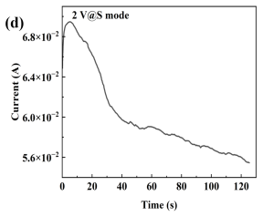
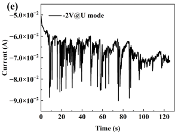
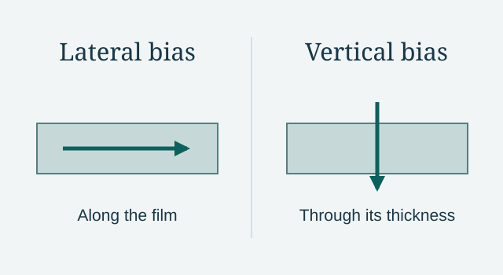

How the current changes when the bias is reversed
In Wang’s Thin Film Group at Purdue, we study a multiferroic tunnel junction with magnetic NiFe nanoparticles in a barium titanate (BTO) layer above a hexagonal boron nitride (h-BN) barrier. Below the barrier, NiFe forms vertical pillars in BTO. The contacts let us probe the film in two directions: between two top electrodes, or between a top electrode and the bottom contact.
The two traces below were recorded between two top electrodes. At +2 V, the current briefly peaks near 69 mA and then falls gradually toward 56 mA. At −2 V, the current shows repeated sharp excursions toward −90 mA. The positive-bias trace drifts over the observation window, but the short, abrupt excursions are much more apparent in the negative-bias trace.


Comparing the two contact geometries
I contributed current–voltage, tunneling magnetoresistance, pulsed, and four-terminal transport measurements. I worked with the team to interpret the current traces in terms of the nanoparticle layer and the buried interfaces. In particular, I compared the response with two top contacts to the response under top-to-bottom bias. The geometry comparison used different bias conditions, so it leaves the separate effects of field direction and bias magnitude unresolved.

What could produce the excursions?
One hypothesis is that polarization in the BTO changes how charge is screened at an interface, altering the effective barrier for tunneling between magnetic regions. If a few local paths carry a large share of the vertical current, a small change in polarization or magnetic alignment along one path could produce a visible current jump. With two top contacts, several lateral paths may contribute in parallel and partially average such fluctuations.
The traces establish a difference in the time dependence of the current under the two biases shown. Identifying which microscopic process causes an individual excursion requires evidence beyond a current trace.
Research context
I am a contributor to the Wang group’s manuscript on MTJ spin-dependent transport, currently in preparation. My local p-bit interface circuit work was a separate collaboration at NanoX Lab.